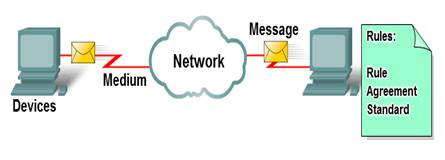

Four Element of Network
1. Rules
2. Medium
3. Messages
4. Device

The Messages
In the first step of its journey from the computer to its destination, our instant message gets converted into a format that can be transmitted on the network. All types of messages must be converted to bits, binary coded digital signals, before being sent to their destinations. This is true no matter what the original message format was: text, video, voice, or computer data. Once our instant message is converted to bits, it is ready to be sent onto the network for delivery.

The Devices
To begin to understand the robustness and complexity of the interconnected networks that make up the Internet, it is necessary to start with the basics. Take the example of sending the text message using an instant messaging program on a computer. When we think of using network services, we usually think of using a computer to access them. But, a computer is only one type of device that can send and receive messages over a network. Many other types of devices can also be connected to the network to participate in network services. Among these devices are telephones, cameras, music systems, printers and game consoles.
In addition to the computer, there are numerous other components that make it possible for our instant message to be directed across the miles of wires, underground cables, airwaves and satellite stations that might exist between the source and destination devices. One of the critical components in any size network is the router. A router joins two or more networks, like a home network and the Internet, and passes information from one network to another. Routers in a network work to ensure that the message gets to its destination in the most efficient and quickest manner

The Medium
To send our instant message to its destination, the computer must be connected to a wired or wireless local network. Local networks can be installed in homes or businesses, where they enable computers and other devices to share information with each other and to use a common connection to the Internet.
Wireless networks allow the use of networked devices anywhere in an office or home, even outdoors. Outside the office or home, wireless networking is available in public hotspots, such as coffee shops, businesses, hotel rooms, and airports.
Many installed networks use wires to provide connectivity. Ethernet is the most common wired networking technology found today. The wires, called cables, connect the computers and other devices that make up the networks. Wired networks are best for moving large amounts of data at high speeds, such as are required to support professional-quality multimedia.
The Services
Network services are computer programs that support the human network. Distributed on devices throughout the network, these services facilitate online communication tools such as e-mail, bulletin/discussion boards, chat rooms, and instant messaging. In the case of instant messaging, for example, an instant messaging service, provided by devices in the cloud, must be accessible to both the sender and recipient.

The Rules
Important aspects of networks that are neither devices nor media are rules, or protocols. These rules are the standards and protocols that specify how the messages are sent, how they are directed through the network, and how they are interpreted at the destination devices. For example, in the case of Jabber instant messaging, the XMPP, TCP, and IP protocols are all important sets of rules that enable our communication to occur.